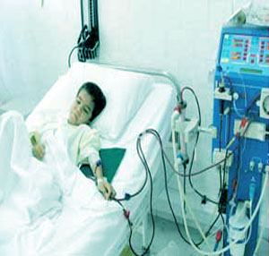
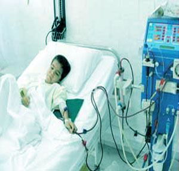

دستور العمل بیمه تکمیلی بیمه عمر پاسارگاد
یکی از جذاب ترین آپشن های بیمه عمر پاسارگاد که منحصرا مختص بیمه پاسارگاد میباشد ، کارت SOS است . در ادامه مطلب دستور العمل ابلاغی در مورد این کارت را ببینید .
راهنمای استفاده از خدمات SOS بیمه پاسارگاد
به منظور تامین خدمات کمک رسانی بیمه گزاران شرکت بیمه پاسارگاد، علاوه بر مزایای مندرج در بیمه نامه و در چهارچوب تعهدات آن، خدمات زیر نیز با استفاده از شبکه خدماتی کمک رسان ایران در دسترس شما قرار دارد.
دسترسی شبانه روزی به خدمات، راهنمایی پزشکی شبانه روزی، معرفی پزشک، بیمارستان و مراکز تشخیصی در سراسر ایران، اخذ پذیرش از بیمارستانها و مراکز تشخیصی طرف قرارداد، تامین مستقیم هزینه درمان و تشخیص در مراکز طرف قرارداد، جبران سریع خسارت در سایر مراکز، سازماندهی انتقال پزشکی زمینی و هوائی، نظارت پزشکی بر درمان، تهیه دارو و وسائل پزشکی کمیاب، اطلاع رسانی، اخذ نظریه دوم پزشکی، سازماندهی ترخیص، تهیه و تنظیم اسناد پزشکی.
استفاده از این خدمات ساده، سریع و آسان است و فقط با یک تلفن در کلیه ساعات شبانه روز و ایام سال در دسترس شما قرار دارد.
بستری در بیمارستان:
پس از تماس با کمک رسان اطلاعات زیر را اعلام نمائید: نام و نام خانوادگی متقاضی خدمات، نام شرکت، شماره قرارداد بیمه، نوع خدمات درخواستی، نام پزشک معالج و بیمارستان، تاریخ بستری، شماره تلفن تماس. (ارسال گواهی پزشکی مبنی بر علت بستری ضروری است).
کمک رسان با دریافت اطلاعات فوق نسبت به انجام خدمات درخواستی در اسرع وقت اقدام خواهد نمود.
در صورتیکه محل بستری یکی از بیمارستانهای طرف قرارداد باشد، پس از دریافت اطلاعات فوق و انطباق خدمات درخواستی با پوشش بیمه، معرفی نامه برای آن بیمارستان ارسال و شما با ارائه کارت شناسایی به قسمت پذیرش بیمارستان می توانید از خدمات لازم برخوردار گردید.
در صورت بستری در سایر بیمارستانها، پس از ترخیص و تسویه حساب، همه مدارک بیمارستانی ممهور به مهر بیمارستان و گواهی پزشک را برای کمک رسان ایران ارسال نمائید. هزینه های فوق برابر با مفاد قرارداد بیمه و تعرفه بستری و درمان در بیمارستانهای طرف قرارداد هم درجه محاسبه و تامین میگردد. در صورت عدم درج حق الزحمه پزشکان در صورتحساب، این مبلغ بر اساس مفاد قرارداد با آن مراکز و یا مراکز هم درجه تامین میگردد.
دوره انتظار: پوشش بیمه ای شما ممکن است برای برخی از خدمات (زایمان، بیماریهای مزمن و ...) دارای دوره انتظار باشد، ارائه خدمات نیز تابع همان دوره انتظار است.
فرانشیز: پوشش بیمه ای شما ممکن است در تامین هزینه های درمان و تشخیص و انتقال پزشکی دارای فرانشیز باشد. ارائه خدمات نیز تابع همان فرانشیز خواهد بود.
استثنائات: پوشش بیمه ای شما ممکن است برای برخی شرایط و بیماریها دارای استثنائات باشد، ارائه خدمات نیز تابع همان استثنائات است.
اورژانس: در صورت مراجعه به اورژانس بیمارستان و ضرورت بستری، مراتب را از همان جا به کمک رسان اعلام نمائید. اقدام لازم برای تامین خدمات مطابق شرایط قرارداد بیمه انجام خواهد گرفت.
خدمات پاراکلینیکی و تشخیصی:
پس از تماس با کمک رسان اطلاعات زیر را اعلام نمائید:
نام و نام خانوادگی متقاضی خدمات، نام شرکت، شماره قرارداد بیمه، نوع خدمات درخواستی، تاریخ و محل انجام خدمات، شماره تلفن تماس، (ارسال گواهی پزشکی مبنی بر علت انجام خدمات ضروری است.)
کمک رسان با دریافت اطلاعات فوق در اسرع وقت نسبت به انجام خدمات درخواستی اقدام خواهد نمود.
در صورت تمایل به استفاده از مراکز طرف قرارداد، کمک رسان پس از دریافت اطلاعات فوق و انطباق خدمات درخواستی با پوشش بیمه، معرفی نامه به مرکز فوق ارسال و شما با مراجعه به آن مرکز و ارائه کارت شناسایی و دستور پزشک می توانید از خدمات مورد نیاز بهره مند شوید.
در صورت تمایل به استفاده از سایر مراکز، پس از دریافت خدمات و تسویه حساب مدارک مورد نیاز شامل: دستور پزشک، اصل صورتحساب پرداختی، اصل نتیجه و گزارش خدمات (عکس، سونوگرافی، شرح و ...) را به کمک رسان ارائه دهید هزینه مطابق با شرایط بیمه نامه در اسرع وقت تامین خواهد شد. محدودیتهای دوره انتظار، فرانشیز و استثنائات شامل خدمات پاراکلینیکی و تشخیص نیز می باشد. استفاده از سهم بیمه گر اول: در صورت تمایل به استفاده از سهم بیمه گر اول (تامین اجتماعی، خدمات درمانی) مراتب را با شرکت بیمه پاسارگاد هماهنگ نمائید.
بیمارستانها و مراکز تشخیصی طرف قرارداد: شرکت کمک رسان به منظور رفاه شما و سرعت در ارائه خدمات با صدها بیمارستان، مراکز جراحی محدود، کلینیکهای تخصصی و مراکز تشخیصی در تهران و شهرستانها طرف قرارداد است (مشاهده لیست مراکز درمانی طرف قرارداد کمک رسان). خواهشمند است در زمان نیاز به استفاده از خدمات، مراتب را تلفنی از کمک رسان استعلام فرمائید.
دوست و همراه عزیز حال که به تمام ویژگی ها و شرایط بیمه عمر پاسارگاد مطلع شدید زمان است که برای آینده خود و خانواده اتان یک تصمیم جدی بگیرید
یک مسیر مطمن پوشش های حادثه و بیماری و سرمایه گزاری فوق العاده - برای شروع یک حرکت با ما تماس بگیرید
09128542401 - محمد یوسفی مشاور و نماینده رسمی بیمه عمر پاسارگاد